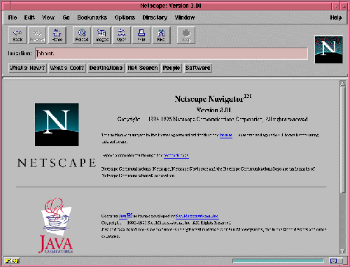
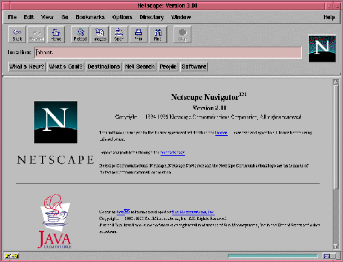

Are we in the future, yet?
A brief history of how GTK+ puts pretty things on your screen
GUADEC 2016 | Karlsruhe | Emmanuele Bassi <ebassi@gnome.org>
Welcome!

This talk has everything
This talk will make you laugh, cry, think, and warm your heart.
More importantly, though, this talk has two goals, one overt and one slightly covert. The former is to present you a history of the rendering in GTK+ over the years. The latter will become apparent at the end of the presentation.
Except ponies.
You will find no ponies, here

But you'll get a kitten
GTK+ has a long history
GTK+ is a toolkit with a long and varied history. Going through the commits log is like going through the strata of the ground — and like archeologists we can pretty much follow the evolution not only of how we think applications should look and behave, but also how toolkits should work in putting things on the user's screen.
Let's explore!
So: sit back, relax, and let's crank up the time machine to go back to the glorious late '90s.
1997: GTK 0.x → 1.x
We are in 1997.

The first MP3 was ripped just the previous year.
Windows 95 was replacing all Windows 3.1 installations.
IBM's OS/2 was dying.
Apple was a small company still clinging to glories past.
 
The browser wars were starting to get serious.

The apex of the X11 GUI toolkits was Motif.
And GTK (without the plus) looked like this.
It's windows all the way down
How was that gorgeous blob of gray pixels put on the screen? At that time, each GTK widget was backed by an X11 window for the output. Each window had various X11 parafernalia: a colormap, where colors would be allocated on the server; a visual, representing the number and depth of color channels available to the application; and a graphics context, which would provide a set of operations to be performed by the client on the server, like stipple patterns.
Drawing on the wire
Yes, in the Glorious Old Days of Network Transparency, GTK was literally sending commands to the X server over the wire — just like every other X toolkit.
1999: GTK 1.2
Let's jump in time a little bit, to the 1.2 days. It was the last days of the last millenium, and at that point GTK had grown support for themes…

… Because nothing says "party like 1999" like green neon themes.
Still X11 all the way down
Underneath it all, though, GTK was still pushing commands to the X server over the wire. It's important to note that GTK was still not working on any other windowing systems outside of X11, a state of grace from which we would soon fall out of.
2002: GTK+ 2.0
Past the crazy end of the millenium — or "Willennium", as it was then known; kids, ask your parents — GTK was all grown up. Not only it spun off the type system into its own library, thus getting a '+' in its name, GTK developers finally acknowledged that other people were living in sin, and decided to bring them to the light by adding support for their platform.
Abstracting means never saying you're
ExcuseSingletonInterfaceFactory().Sorry().Apologize()
This meant separating the API from the implementation for things like drawing contexts, visuals, and other backend-specific constructs.
GDK is the continuation of X11 by other means
Thus began the grand work of reimplementing the X11 API on other platforms.
The world doesn't stop turning just because you think Linux is about choice
In the meantime, though, things were moving in different directions even in the X world. X developers, though a misunderstanding of how modern GPUs worked, created the RENDER extension to the core protocol, which added Porter-Duff compositing operators to pixel buffers, and a library called "Cairo" exploiting them was created. Instead of making the X server know how to render all the possible font types on this planet, or have applications send the whole font vector data over the wire thus requiring Gb/s connections to render "Hello world" in Comic Sans, toolkits started using client side buffers to shape text. Once the forbidden fruit of doing things in a sensible way had been tasted, the end of the Network Transparent Age came quickly.
Cairo
GTK+ 2.8 introduced the dependency on Cairo, and developers were asked to replace the GDK drawing calls, which would go through the X server, or through an emulation of what the X server would do, with Cairo drawing. For good measure, both APIs were supported but mixing them would lead to interesting results, so the old drawing API was deprecated, and waiting to be placed on the chopping block in the next major API bump.
Client-side windows
In GTK+ 2.18 changed the way GTK would draw once again, by dropping native windowing system surfaces in favour of "client-side windows". GDK would maintain an internal hierarchy of drawable surfaces, and would only use native surfaces on request.
2011: GTK+ 3.0 → …
GTK+ 3.0, the major API bump of 2011. The 2.x API was 9 years old, but the drawing API that GTK+ was stringing along was, at that point, almost 14 years old.
- OpenGL
- transparent windows
During the 3.x API cycle we introduced additional changes to enable drawing CSS primitives, as well as enabling drawing with OpenGL within the GTK+ drawing cycle. The churn has been huge, but it has moved the toolkit in a more modern direction.
Except…
GPUs are not going away
(no matter if you close your eyes and pretend they don't exist)
GPUs started taking off between 2002 and 2011, and these days toolkits are expected to use them. Cairo is well-equipped at taking advantage of GPUs with dedicated 2D pipelines like Intel, and Intel, and Intel; falling their presence, Cairo works very well on Intel-compatible CPUs. Sadly, modern GPUs do not have 2D pipelines, and most devices available to users do not use Intel CPUs. For all of these, Cairo is fairly ill-equipped at doing its job efficiently.
CSS
Additionally, GTK+ has switched to a new, declarative API in order to describe how widgets should look like: CSS. CSS has its own state, just like Cairo, but the two do not necessarily get along. GTK+, like web browsers before it, requires to blast away most of the Cairo state in order to replace it with the one computed through the CSS style machinery.
OpenGL is actually getting better
(even if its design is still terrible)
Instead of Cairo, we could use a new drawing API, like OpenGL. Now that OpenGL implementations available on Linux have finally reached a competitive position. Except that OpenGL is pretty terrible at drawing GUI elements.
This is why we can have nice things
We do have a way out: we can use GL for what it's good, and rely on Cairo for pretty rasterizations that create the gradients that Lapo seem to use pretty much everywhere in Adwaita.
Aim for the stars
(Avoid hitting London, please)
The end goal is to have access to the power of graphics hardware while still getting good results for rendering complex things like fonts and paths.
Additionally, we want to ensure that we use efficiently all the resources at our disposal, like multiple cores. Even a cheap mobile-like platform has at least two cores, these days.
Leave no app developer behind
At the same time, we want application developers to either not notice the change at all, or to slowly port away from the existing rendering code towards the new one.
We did this many times
(with varied results)
We achieve that in the same we achieved the migration from GDK/X11 drawing primitives to Cairo: we add new API while we deprecate the old code paths; we allow mixing the two with a small performance penalty in the meantime, until we can break the API once again.
GSK
The new API is called GSK, and aside from providing a mid-level scene graph to replace Clutter and Clutter-GTK, it also provides a low-level retained rendering API for GTK to use.
Compositing and rendering CSS primitives
GSK uses OpenGL and OpenGL ES to ensure that resources are composited on the GPU instead of the CPU; it defers rendering to after we built the resources necessary to display the contents of the window, and this allows us to improve the toolkit even further.
Are we in the future, yet?
So, the question is: are we in the future, yet?
We're close
The answer is: we're on the threshold. The toolkit now enables us to do things that we'd never been able to do before.
The future looks suspiciously like now
But the point of the future is that there's always something new on the horizon. What this talk should have convinced you is that the toolkit is not only alive, but it's also evolving. GTK+ is always getting better. The changes of the past 20 years are an indication of what we can achieve in the next 20.
Never give up, never surrender
Sure, it's been painful at times, and we must get better at both communicating change as well as providing "escape hatches" for application developers. The important thing, though, is that we cannot let the core toolkit of the GNOME platform, as well as the Linux toolkit, stagnate by simply staying still while the world around us moves on.

Thank you!
- License: CC by-sa 4.0
- Source: https://github.com/ebassi/2016-guadec
- Articles: https://www.bassi.io/tag/gsk-demystified/
- Job: https://endlessm.com